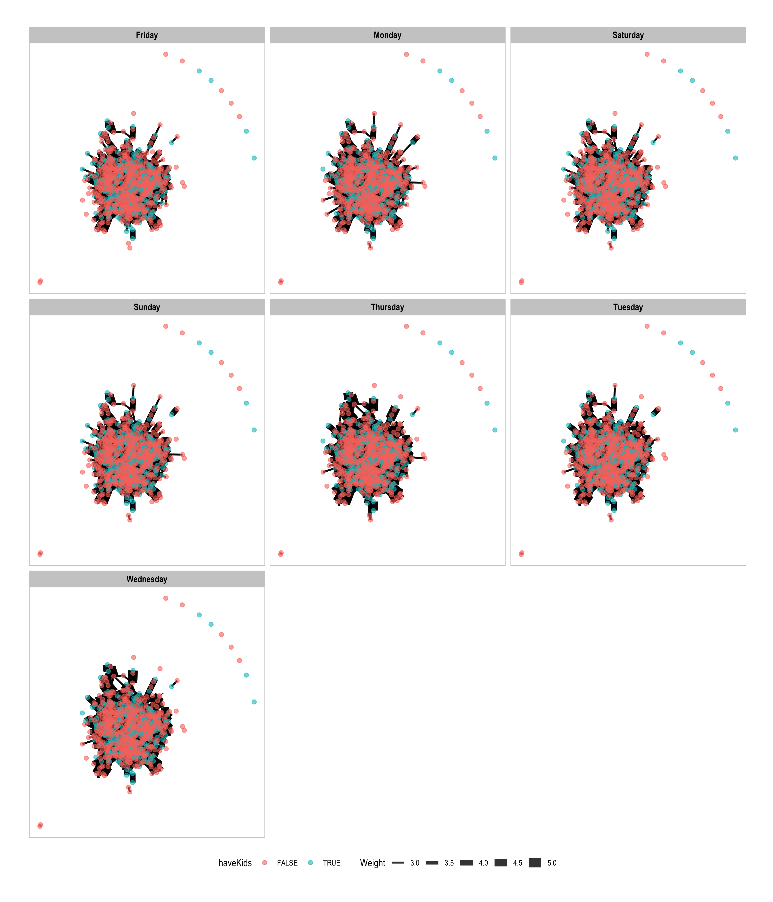

Practical Visual Analytics Use: VAST Challenge 2022, Challenge 1 - Social Network, exploring the significant patterns.
In this take-home exercise, we reveal the patterns of social
activities in Ohio, USA by creating data visualization with
igraph and visNetwork.
With reference to Challenge 2 of VAST Challenge 2022, the social patterns of community in Ohio, USA will be explored.
The following code chunk installs the required R packages and loads them into RStudio environment. The loading packages for network visualization are igraph, tidygraph, ggraph, visNetwork, while lubridate and tidyverse are packages for data wrangling.
packages = c('igraph', 'tidygraph', 'ggraph', 'visNetwork', 'lubridate', 'tidyverse')
for(p in packages){
if(!require(p, character.only = T)){
install.packages(p)
}
library(p, character.only = T)
}
In social network analysis, there are two main components required to plot a graph.
Node Data: represent the source of entity, which refers to vertices in graph theory. In this take-home exercise, the node data contains personal information of participants such as their age, household size, truth of having kids or not, education level and etc.
Participants <- read_csv("data/Participants.csv")
Edge Data: connect the node, which is also called links. In this take-home exercise, the edge data contains information on time and social activities between the participants.
SocialNetwork <- read_csv("data/SocialNetwork.csv")
The following code chunk is to extract the needed data for the
visualization. In this exercise, we only use one month data from
2022-03-01 to 2022-03-31. The columns in social network file are renamed
for better understanding. The weekdays() function is to
filter working days and non-working days.
nodes <- Participants %>%
rename("id" = "participantId") %>%
select(id, haveKids, joviality)
edges <- SocialNetwork %>%
filter(timestamp < "2022-04-01") %>%
select(participantIdFrom, participantIdTo, timestamp) %>%
rename("source" = "participantIdFrom", "target" = "participantIdTo") %>%
mutate(day = weekdays(timestamp)) %>%
mutate(daytype = case_when(day=="Saturday"|day=="Sunday" ~ 'Weekend',
day=="Monday"|day=="Tuesday"|day=="Wednesday"
|day=="Thursday"|day=="Friday" ~ 'Weekday'))
The following code chuck is to filter and prepare the general data for the later plot.
x <- c("Monday", "Tuesday", "Wednesday", "Thursday", "Friday",
"Saturday", "Sunday")
total_edges <- edges %>%
group_by(source, target, day) %>%
summarise(Weight = n()) %>%
mutate(day = factor(day, levels = x)) %>%
arrange(day) %>%
filter(source!=target) %>%
filter(Weight > 2) %>%
ungroup
total_edges <- total_edges %>%
left_join(y = nodes, by = c("source" = "id"))
total_nodes <- nodes %>%
filter(id %in% total_edges$source |
id %in% total_edges$target)
total <- total_edges %>%
left_join(y = total_nodes, by = c("source" = "id"))
The following code chuck is to filter and prepare the weekday data for the later plot.
The following code chuck is to filter and prepare the weekend data for the later plot.
saveRDS(edges, file = "edges.rds")
saveRDS(total_nodes, file = "total_nodes.rds")
saveRDS(total_edges, file = "total_edges.rds")
saveRDS(edges_weekday, file = "edges_weekday.rds")
saveRDS(nodes_weekday, file = "nodes_weekday.rds")
saveRDS(edges_weekend, file = "edges_weekend.rds")
saveRDS(nodes_weekend, file = "nodes_weekend.rds")
edges <- readRDS("data/edges.rds")
total_nodes <- readRDS("data/total_nodes.rds")
total_edges <- readRDS("data/total_edges.rds")
edges_weekday <- readRDS("data/edges_weekday.rds")
nodes_weekday<- readRDS("data/nodes_weekday.rds")
edges_weekend <- readRDS("data/edges_weekend.rds")
nodes_weekend <- readRDS("data/nodes_weekend.rds")
To create social network graph, igraph package is to
create the prepared data for the following visualization.
graph_from_data_frame() of igraph is used to covert the nodes
and edges data.frame into an igraph file format; while
as_tbl_graph() of tidygraph() is used to convert the
igraph file into tidygraph data model.
Before taking a look into the following plots, the following code chunk is to check the proportion of social interaction between weekday and weekend. It is surprising that the percentage of weekday is much higher than weekend, which accounts for 26% of the total. The reason that participants have more social activities on weekday might due to their social interactions in their workplaces.
overall <- edges %>%
group_by(daytype) %>%
summarise(percent = n()/nrow(.))
overall
# A tibble: 2 2
daytype percent
<chr> <dbl>
1 Weekday 0.739
2 Weekend 0.261In this exercise, we would focus on the social interaction of participants with kids or without kids. We would like to explore whether having a kid would result in more social activities and expand their social network, since they may need to bring their child to the playground or outdoor activities.
The first plot is to look at the comprehensive social relationship between each participant.
gtotal <- graph_from_data_frame(total_edges,
vertices = total_nodes) %>%
as_tbl_graph()
gtotal
# A tbl_graph: 877 nodes and 28678 edges
#
# A directed multigraph with 11 components
#
# Node Data: 877 3 (active)
name haveKids joviality
<chr> <lgl> <dbl>
1 0 TRUE 0.00163
2 1 TRUE 0.328
3 2 TRUE 0.393
4 3 TRUE 0.138
5 4 TRUE 0.857
6 5 TRUE 0.773
# with 871 more rows
#
# Edge Data: 28,678 4
from to day Weight
<int> <int> <chr> <int>
1 1 219 Monday 3
2 2 57 Monday 4
3 2 744 Monday 4
# with 28,675 more rowsset_graph_style()
g <- ggraph(gtotal,
layout = "nicely") +
geom_edge_link(aes(width=Weight),
alpha=0.8) +
scale_edge_width(range = c(1, 5)) +
geom_node_point(aes(colour = haveKids),
size = 2,
alpha=0.6)
g + facet_edges(~day) +
th_foreground(foreground = "grey80",
border = TRUE) +
theme(legend.position = 'bottom')

Insight From the graph
The above graphs do not clearly show the differences of social activities between participants with kids and without kids on weekday and weekend. The pattern looks similar in each day. Therefore, to observe the clear pattern, we would further plot the distribution of social relationship.
g <- ggplot(data = fulltable, aes(x = Weekday, fill = haveKids)) +
geom_bar(position = "dodge") +
labs(x="Weekday", y="Count", fill="Have Kids") +
theme(axis.title.y= element_text(angle=0),
axis.line= element_line(color= 'grey'))
Insight From the graph
It is interesting that the total of social activities on weekday is higher, especially from Monday to Thursday. The highest count is showed on Thursday. This might because that people would work more hardworking on their jobs to communicate with their colleagues or customers in these four days so as to ensure their tasks can be achieved on Friday and can be relaxed on weekend. Therefore, there are more social interactions.
In addition, family without kids has less activities. This might be due to the fact that the number of participants with kid in the data is much less than people without kids. It is surprised that there are less social activities on weekend for people with kids. This may infer that parents pay more attention on their work on weekday and prefer to allocate their time with their children but not have activities with other friends.
#tbl_graph
gweekday <- graph_from_data_frame(edges_weekday,
vertices = nodes_weekday) %>%
as_tbl_graph()
gweekday
# A tbl_graph: 878 nodes and 9084 edges
#
# A directed simple graph with 1 component
#
# Node Data: 878 3 (active)
name haveKids joviality
<chr> <lgl> <dbl>
1 0 TRUE 0.00163
2 1 TRUE 0.328
3 2 TRUE 0.393
4 3 TRUE 0.138
5 4 TRUE 0.857
6 5 TRUE 0.773
# with 872 more rows
#
# Edge Data: 9,084 3
from to Weight
<int> <int> <int>
1 1 220 11
2 1 586 10
3 2 58 19
# with 9,081 more rowsquantile_gweekday <- quantile(eigen_centrality(gweekday)$vector,
probs = seq(0, 1, 1/10))
V(gweekday)$size = eigen_centrality(gweekday)$vector
gweekday_aggregated <- delete_vertices(gweekday,
V(gweekday)[size < quantile_gweekday[10]])
set.seed (1234)
layout1 <- layout_with_fr(gweekday_aggregated)
quantile_gweekday_aggregated <- quantile(V(gweekday_aggregated)$size,
#identify top 10% of the new vertices
probs = seq(0, 1, 1/10))
V(gweekday_aggregated)$color <- ifelse (V(gweekday_aggregated)$size >
quantile_gweekday_aggregated[10],
"gold2",
"honeydew3") #color yellow if vertices is top 10%
E(gweekday_aggregated)$color <- "grey"
V(gweekday_aggregated)$size <- V(gweekday_aggregated)$size/0.065
#Increase the size of nodes based on their centrality score, only those with high score will be visible
V(gweekday_aggregated)$label <- ifelse (V(gweekday_aggregated)$size*0.065 >
quantile_gweekday_aggregated[10],
V(gweekday_aggregated)$name,NA)
#label the vertices if vertices belongs to the top 10%
plot(gweekday_aggregated, edge.arrow.size=0.25,
edge.arrow.mode = "-",
vertex.label = V(gweekday_aggregated)$label,
vertex.label.cex = 0.65,
vertex.label.font = 2,
main = "Which Participant has the most influence on weekdays?")
From the above graph, we can observe that there are 9 participants who are regarded as a influential person based on their EigenVector Score, 686, 359, 460, 390, 255, 342, 478, 274, 398. To explore their social network circle, we would plot the interactive network graph in the exercise later.
#tbl_graph
gweekend <- graph_from_data_frame(edges_weekend,
vertices = nodes_weekend) %>%
as_tbl_graph()
gweekend
# A tbl_graph: 862 nodes and 4252 edges
#
# A directed simple graph with 7 components
#
# Node Data: 862 3 (active)
name haveKids joviality
<chr> <lgl> <dbl>
1 0 TRUE 0.00163
2 1 TRUE 0.328
3 2 TRUE 0.393
4 3 TRUE 0.138
5 4 TRUE 0.857
6 5 TRUE 0.773
# with 856 more rows
#
# Edge Data: 4,252 3
from to Weight
<int> <int> <int>
1 1 214 5
2 1 575 5
3 2 55 6
# with 4,249 more rowsquantile_gweekend <- quantile(eigen_centrality(gweekend)$vector,
probs = seq(0, 1, 1/10))
V(gweekend)$size = eigen_centrality(gweekend)$vector
gweekend_aggregated <- delete_vertices(gweekend,
V(gweekend)[size < quantile_gweekend[10]])
set.seed (1234)
layout1 <- layout_with_fr(gweekend_aggregated)
quantile_gweekend_aggregated <- quantile(V(gweekend_aggregated)$size,
#identify top 10% of the new vertices
probs = seq(0, 1, 1/10))
V(gweekend_aggregated)$color <- ifelse(V(gweekend_aggregated)$size >
quantile_gweekend_aggregated[10],
"gold2",
"honeydew3") #color yellow if vertices is top 10%
E(gweekend_aggregated)$color <- "grey"
V(gweekend_aggregated)$size <- V(gweekend_aggregated)$size/0.065
#Increase the size of nodes based on their centrality score, only those with high score will be visible
V(gweekend_aggregated)$label <- ifelse(V(gweekend_aggregated)$size*0.065 >
quantile_gweekend_aggregated[10],
V(gweekend_aggregated)$name,NA)
#label the vertices if vertices belongs to the top 10%
plot(gweekend_aggregated, edge.arrow.size=0.25,
edge.arrow.mode = "-",
vertex.label = V(gweekend_aggregated)$label,
vertex.label.cex = 0.65,
vertex.label.font = 2,
main = "Which Participant has the most influence on weekends?")
From the above graph, it is interesting that 9 influential participants on weekend are different from weekday, which are 693, 417, 613, 435, 258, 357, 447, 323, 450. This is owing to the fact that the purpose and property of social interactions on working days and non-working days is not identical. On weekend, people may socialize more on having entertainment, while on weekday, their social interactions might be more relative to their work.
Since the weekday have more social interactions on weekday, here we take a closer look at the top 10 initiators and receivers within the participants.
The following code chunk is to find the top 10 initiator of the weekday social interactions.
The following code chunk is to find the top 10 receiver of the weekday social interactions.
The following result show that the top 10 initiator and receiver are same.
top_initiation
[[1]]
[1] 390 835 679 1009 984 274 565 255 359 408top_receiver
[[1]]
[1] 390 835 679 1009 984 274 565 255 359 408The following code chunk prepares the data for the visualization and
plot the network graph using vizNetwork()
nodes_weekday_most <- nodes_weekday_most %>%
select(-c(joviality))
edges_weekday_most <- edges_weekday_most %>%
rename(from = source,
to = target)
nodes_weekday_most <- nodes_weekday_most %>%
rename(group = haveKids)
visNetwork(nodes_weekday_most,
edges_weekday_most,
main = "Are you in the circles of the most socially active people?",
submain = 'City of Engagement, Ohio, USA',
footer = 'Source: VAST Challenge 2022')%>%
visIgraphLayout(layout = 'layout_with_fr') %>%
visOptions(highlightNearest = TRUE,
nodesIdSelection = TRUE) %>%
visLegend() %>%
visLayout(randomSeed = 1234)
Insight From the graph
The categorical label, True and False, in the plot is to identify participants with kid and without kids. By zooming in the graph and selecting particular participant Id, we are able to look at these 10 peoples social network closely. It is observed that people with kids have more social interactions compared to those without kids.